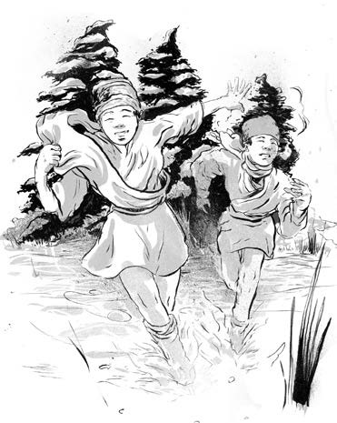
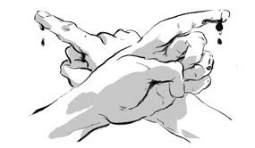
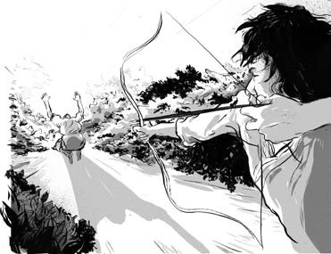
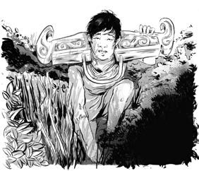
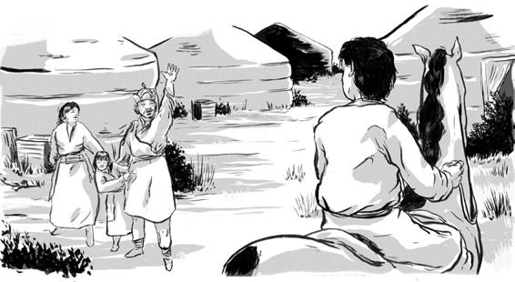

Gia đình Thiết Mộc Chân sống nhờ ăn quả mọng và rễ cây. Các cậu bé chế ra cần câu từ những chiếc kim, làm mũi tên từ gỗ và xương, quần áo từ da chuột và chó.
Thỉnh thoảng, họ sống chung với những bộ lạc khác. Có một cậu bé tên là Trát Mộc Hợp sống cạnh gia đình Thiết Mộc Chân vào mỗi mùa đông. Cậu trở thành bạn thân của Thiết Mộc Chân.
Thiết Mộc Chân và Trát Mộc Hợp săn bắn và chơi đùa cùng nhau. Họ trượt băng trên dòng sông Onon, ném những khúc xương khuỷu là món đồ chơi nhỏ làm từ xương gót chân cừu.

Khi lên mười một tuổi, họ tặng nhau những khúc xương khuỷu đặc biệt. Vào năm sau, họ lại tặng nhau đầu mũi tên. Và rồi họ gắn kết nhau bằng một lễ cắt máu ăn thề. Cả hai đã trở thành anda: anh em kết nghĩa.

.Nhưng rồi vào một mùa đông, Trát Mộc Hợp không quay trở lại. Liệu hai người anh em kết nghĩa có còn gặp lại nhau không?
Trong xã hội trên thảo nguyên, khi không có mặt người cha, thì người đàn ông lớn tuổi nhất trong gia đình sẽ đứng đầu. Ở gia đình Thiết Mộc Chân, đó là anh trai Biệt Khắc Thiếp Nhi, người rất hay bắt nạt Thiết Mộc Chân. Có lần, Biệt Khắc Thiếp Nhi đã cướp con cá mà Thiết Mộc Chân bắt được để thể hiện uy quyền.
Thiết Mộc Chân cũng muốn làm người đứng đầu dù mới chỉ mười ba tuổi. Cậu quyết định dạy cho Bột Khắc Thiếp Nhi một bài học.
Vào một ngày, Thiết Mộc Chân cùng em trai Cáp Tát Nhi tiếp cận Bột Khắc Thiếp Nhi. Cáp Tát Nhi sử dụng cung tên giỏi hơn, vì thế cậu đứng trước mặt Bột Khắc Thiếp Nhi. Thiết Mộc Chân giương cung ngắm vào lưng Bột Khắc Thiếp Nhi.

Bột Khắc Thiếp Nhi xin thua và quỳ xuống cầu xin Thiết Mộc Chân tha cho em trai Biệt Lặc Cổ Đài. Thiết Mộc Chân đồng ý.
Sau đó, Thiết Mộc Chân và Cáp Tát Nhi đã giơ cung bắn và để mặc Bột Khắc Thiếp Nhi đau đớn đến chết.
Biết chuyện, Ha Nguyệt Luân rất tức giận. Bà gọi hai con là kẻ sát nhân, thú vật, ác quỷ. Bà nói rằng từ giờ bạn đồng hành duy nhất của Thiết Mộc Chân sẽ chỉ là cái bóng của cậu mà thôi.
Hành động của Thiết Mộc Chân đã đến tai bộ lạc cũ của cha cậu, bộ lạc đã bỏ rơi gia đình cậu vài năm trước đó. Họ quay trở lại trại của Thiết Mộc Chân để trừng phạt cậu. Thiết Mộc Chân chạy trốn nhưng nhanh chóng bị phát hiện. Họ tròng ách - một thanh gỗ được dùng làm yên cương - lên cổ và giải cậu về trại.
Hằng ngày, họ đưa cậu qua hết ger này đến ger khác, một người hầu sẽ giám sát cậu. Một ngày, lợi dụng lúc những kẻ bắt cậu đang tiệc tùng, Thiết Mộc Chân đã trốn thoát. Cậu vung đòn hạ gục tên lính canh.

.Thiết Mộc Chân chạy về phía con sông và trốn trong một lùm cỏ. Một người đàn ông phát hiện ra cậu, ông bảo Thiết Mộc Chân cứ ở đó đến khi trời tối hẵng chạy về nhà.
Nhưng Thiết Mộc Chân lại chạy tới ger của người đàn ông này khi trời tối. Ông rất tức giận bởi điều này có thể khiến gia đình ông gặp nguy hiểm. Nhưng có gì đó đặc biệt ở Thiết Mộc Chân, một ánh lửa bùng cháy trong mắt cậu lại khiến ông muốn giúp.
Ông tháo ách ở cổ cho Thiết Mộc Chân. Hôm sau, cả gia đình đã giấu Thiết Mộc Chân vào một chiếc xe chở len. Đêm xuống, họ cho cậu đồ ăn và một con ngựa. Thiết Mộc Chân rất cảm kích. Chính bộ lạc của cậu đã bỏ rơi gia đình cậu trên thảo nguyên. Vài năm sau họ trở lại chỉ để bắt cậu. Nhưng một gia đình nghèo đã mạo hiểm cả mạng sống để giúp đỡ cậu.

Trên thảo nguyên, bộ lạc và bộ tộc là tất cả cuộc sống. Nhưng đối với Thiết Mộc Chân, đó chỉ toàn là đau khổ và giày vò. Gia đình - như anda Trát Mộc Hợp - và lòng tốt từ những người lạ là nơi cậu đặt niềm tin.